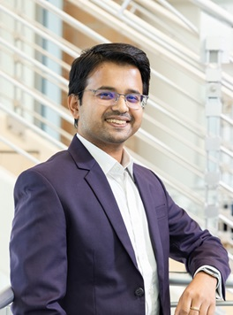

Sazadur is a tenure-track Assistant Professor in the Department of Electrical and Computer Engineering at
University of Central Florida. He is affiliated with both ECE and CS department at UCF under the “Cyber Security
and Privacy Cluster”. Before joining UCF, Sazadur was a Security Architecture Engineer at Intel Corporation
working in security hardening and threat modeling of next generation Xeon processors. He earned his Ph.D. and
M.Sc. from the Department of Electrical and Computer Engineering, University of Florida under the supervision of
Prof. Mark Tehranipoor at FICS Lab. Earlier, Sazadur received the B.Sc. degree in Electrical and Electronic
Engineering from the Bangladesh University of Engineering and Technology.
Before starting his graduate studies, Sazadur was a design engineer in different fabless semiconductor companies
for four years to work on industrial scale 28nm and 14nm custom ICs. He has co-authored more than twenty
peer-reviewed research papers, three patents (1 granted), one textbook, and several book-chapters during his
Doctoral degree. His research works are showcased in premier ACM/IEEE journals and conferences, including the
Design Automation Conference (DAC), Design Automation and Test in Europe (DATE), IEEE International Test
Conference (ITC), IEEE Hardware Oriented Security and Trust (HOST), Elsevier Integration, and ACM Transactions
on
Design Automation of Electronic Systems (TODAES). He has multiple internship experiences at Intel Corporation,
where he performed FIPS 140-3 security certification and developed an automated threat model review tool for
different adversary models. His research interests include Semiconductor Supply Chain Security, AI-Assured Chip
Design, Secure Heterogeneous Integration, and Hardware Acceleration of Fully Homomorphic Encryption.